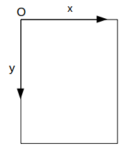
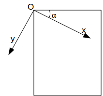
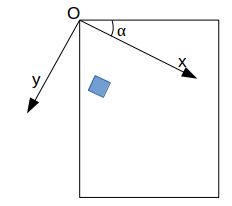
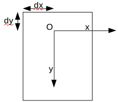

Processing propose 3 fonctions très importantes (mais relativement complexes à prendre en main) :
- la fonction "translate" qui permet de translater les axes de coordonnées.
- la fonction "rotate" qui permet de faire faire une rotation aux axes de coordonnées.
- la fonction "scale" qui permet de modifier l'échelle.
Il faut bien que vous compreniez que ces fonctions agissent sur le système de coordonnées et pas directement sur les dessins.
Commençons par la fonction "rotate" qui permet de "tourner" le système de coordonnées d'un certain angle. Cette fonction prend un seul paramètre : l'angle de rotation (en radian, la fonction "radians" permet de convertir les degrés en radian).
Au départ nous avons :
après avoir appliqué la fonction "rotate" :
rotate(α);
nous obtenons ceci :
À faire vous-même 4.1
Saisissez et testez ce code
size(200,200);
rotate(radians(20));
rect(60,50,20,20);
sans le "rotate"

avec le "rotate"
À faire vous-même 4.2
Saisissez et testez ce code
size(200,200);
rect(60,50,20,20);
rotate(radians(20));
Comme vous pouvez le constater, le "rotate" n'a aucune action sur un élément déjà dessiné au moment de son application.
À faire vous-même 4.3
Créez un programme permettant d'obtenir ceci :

La fonction "translate" permet de faire faire une translation au système de coordonnées :
avant
après un :
translate(dx,dy);
on obtient ceci
À faire vous-même 4.4
Saisissez et testez ce code
size(200,200);
translate(80,30);
rect(60,50,20,20);
sans le "translate"
avec le translate

La fonction "scale" ne devrait pas vous poser de difficultés :
À faire vous-même 4.5
Saisissez et testez ce code
size(200,200);
scale(2);
rect(60,50,20,20);
"scale" est l'équivalent d'un zoom (ou d'une loupe) si son argument est supérieur à un. Je vous laisse deviner l'effet d'un argument compris entre 0 et 1.
Il est possible de combiner "rotate", "translate" et "scale" (attention l'ordre d'application à son importance) :

À faire vous-même 4.6
Créez un programme permettant d'obtenir ceci : (le programme doit faire moins de 10 lignes).
La fonction "pushMatrix" permet d'effectuer une "sauvegarde" de l'état du système de coordonnées au moment où cette fonction est exécutée. "popMatrix" restaure cette sauvegarde
À faire vous-même 4.7
Saisissez et testez ce code
size(200,200);
translate(80,30);
fill(255,0,0);
rect(60,50,20,20);
pushMatrix();
translate(0,50);
fill(0,255,0);
rect(60,50,20,20);
popMatrix();
fill(0,0,255);
rect(80,50,20,20);
Comme vous devez le constater le carré bleu n'a pas "bénéficié" de la même "translation vers le bas" que le carré vert. Le "popMatrix" a en effet "annulé" cette "translation vers le bas" (toutes les transformations comprises entre un "pushMatrix" et un "popMatrix" sont annulées au moment du "popMatrix").